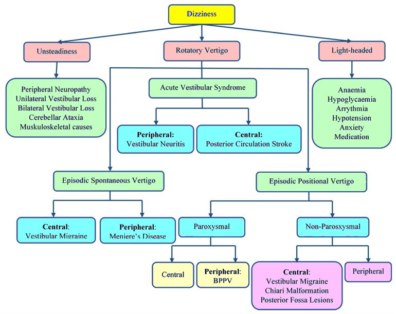
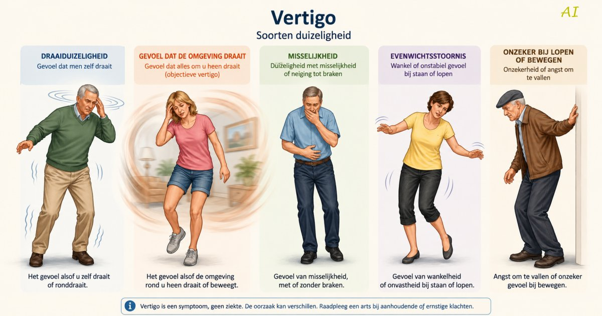
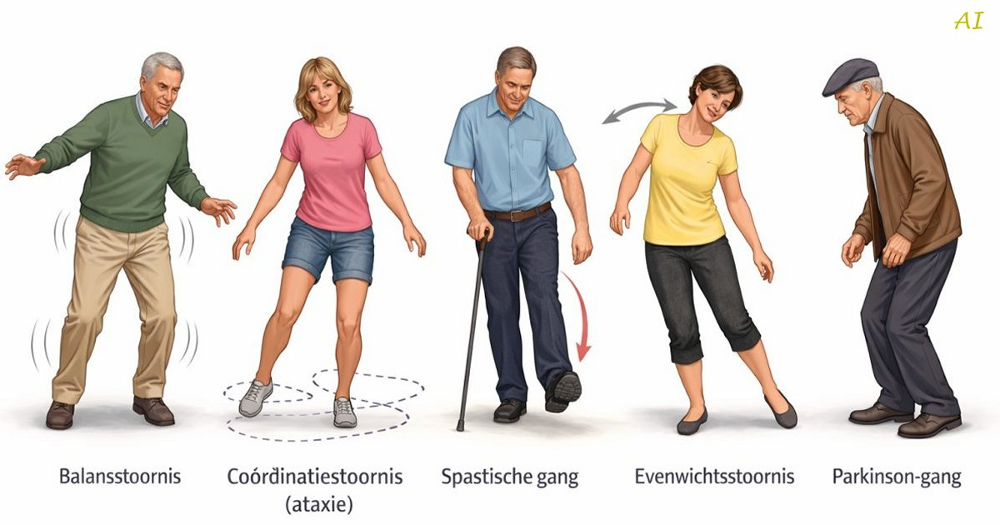

<hr><!DOCTYPE html>
<html lang="nl">
<head>
<meta charset="UTF-8">
<meta name="viewport" content="width=device-width, initial-scale=1.0">

<meta name="format-detection" content="telephone=no">
<meta name="apple-mobile-web-app-capable" content="yes">

<meta property="og:locale" content="nl_BE">
<meta property="og:title" content="Vertigo - Structured Clinical Data Generator">
<meta property="og:description" content="Experimentele versie – as-is">
<meta property="og:type" content="website">
<meta property="og:url" content="https://medsoftwz.github.io/vertigoai.html">
<meta property="og:image" content="https://medsoftwz.github.io/images/vertigo.jpg">
<meta property="og:image:width" content="1200">
<meta property="og:image:height" content="630">
<meta property="og:image:type" content="image/jpg">

<title>Vertigo | e-aanmeldformulier</title>

<style>
body{
  font-family:Arial,sans-serif;
  padding:14px;
  line-height:1.35;
  font-size:16px;
  color:#222;

  max-width:900px;
  margin:auto;

  -webkit-text-size-adjust:100%;
}


.header{
  position:sticky;
  top:0;
  background:white;
  z-index:999;
  box-shadow:0 2px 6px rgba(0,0,0,0.12);
  padding:10px;
}

h1{ margin:0; text-align:center; color:#1f4d7a; font-size:16px; font-weight: 400;}
h2{ color:#349d1d; font-size:15px; border-bottom:2px solid #d9e2ec; padding-bottom:6px; font-weight: 400; }

.disclaimer{ margin-top:6px; text-align:center; font-size:11px; color:#666; line-height:1.4; }

.tabs{
  display:flex;
  flex-wrap:wrap;
  justify-content:center;
  gap:6px;
  margin-top:10px;
}

.tab-btn{
  border:none;
  background:#468CD2;
  color:white;
  padding:10px 14px;
  border-radius:7px;
  cursor:pointer;
  font-size:14px;
}

.tab-btn.active{ background:#00C000; }
.tab-btn.completed{ background:#A56363 }
.tab-btn.active.completed{ background:#00E000; }

.info-btn{
  color:#1565c0;
  cursor:pointer;
  font-weight:bold;
  margin-left:6px;
  font-size:14px;
}

.info-btn:hover{ color:#0d47a1; }

.info-modal{
  display:none;
  position:fixed;
  z-index:99999;
  left:0;
  top:0;
  width:100%;
  height:100%;
  background:rgba(0,0,0,0.35);
}

/* grootte van de popup */

.info-modal-content{
  background:#fffde7;
  width:min(82%, 1100px);
  max-height:90vh;
  overflow:auto;
  margin:4vh auto;
  padding:10px 20px 20px 20px;
  border-radius:10px;
  box-shadow:0 4px 18px rgba(0,0,0,0.25);
  position:relative;
}

.info-close{
  position:absolute;
  right:10px;
  top:6px;
  font-size:20px;
  cursor:pointer;
  color:#666;
}

.info-text{
  color:#003c7a;
  line-height:1.5;
  white-space:pre-line;
  font-size:14px;
}

.container{ max-width:1100px; margin:auto; padding:12px; }

.section{ display:none; }
.section.active{ display:block; }

.card{
  background:white;
  border-radius:10px;
  padding:14px;
  margin-bottom:12px;
  box-shadow:0 2px 8px rgba(0,0,0,0.08);
}

.question{ margin-bottom:20px; }
.question-title{ font-weight:500; color:#003c7a; margin-bottom:10px; font-size:15px; }
.question-subtitle{ font-size:12px; color:#666; margin-top:4px; }

label{ display:block; margin:8px 0; font-size:15px; color:#222; }

.option-label{
  display:block;
  margin:3px 0;
  font-size:14px;
  color:#800040;
  line-height:1.0;
}

input[type="text"],
input[type="number"],
input[type="date"]{
  width:50%;
  box-sizing:border-box;
  padding:10px;
  border:1px solid #ccc;
  border-radius:6px;
  font-size:14px;
}

textarea{
  width:90%;
  min-height:140px;
  box-sizing:border-box;
  padding:10px;
  border:1px solid #ccc;
  border-radius:6px;
  font-size:15px;
  line-height:1.5;
  resize:vertical;
}

select{
  width:220px;
  padding:8px;
  border:1px solid #ccc;
  border-radius:6px;
  font-size:14px;
}

textarea{ min-height:100px; resize:vertical; }

.section-notes{ margin-top:18px; }
.section-notes textarea{ background:#fffef6; }

.button-row{
  display:flex;
  flex-wrap:wrap;
  gap:10px;
  justify-content:center;
  margin-top:20px;
}

button.action{
  border:none;
  background:#1f4d7a;
  color:white;
  padding:12px 18px;
  border-radius:8px;
  cursor:pointer;
}

button.action:hover{ background:#295f95; }

.progress-wrap{
  position:fixed;
  left:0;
  bottom:0;
  width:100%;
  height:24px;
  background:#ddd;
}

.progress-bar{
  height:100%;
  width:0%;
  background:#2e7d32;
  color:white;
  display:flex;
  align-items:center;
  justify-content:center;
  transition:0.3s;
  font-size:12px;
  font-weight:bold;
}

.code-badge{
  display:inline-block;
  background:#eef4ff;
  color:#1d4f91;
  border-radius:4px;
  padding:2px 6px;
  font-size:11px;
  margin-left:6px;
}

@media print{
  .no-print{
    display:none;
  }
}
</style>
</head>
<body>

<div class="header no-print">
  <h1 id="mainTitle"></h1>

  <div class="disclaimer">
    Experimentele medische intake software — geen medisch hulpmiddel.<br>
    Geen gegevens worden centraal opgeslagen of verzonden.
  </div>

  <div class="tabs" id="tabs"></div>
</div>

<div class="container" id="container"></div>

<div class="progress-wrap no-print">
  <div class="progress-bar" id="progressBar">0%</div>
</div>

<script>

/* =====================================================
   CONFIGURATIE
===================================================== */

const FORM_CONFIG = {

  title: "Vertigo - Structured Clinical Data Generator",

  pdfPrefix: "Vertigo",

  sections: [

    {
      id: "algemeen",
      title: "Algemeen",
      freeText: true,

      questions: [

        {
          id: "naam",
          type: "text",
          text: "ID",
	      placeholder: "Vrij in te vullen"		  
        },

{
  id: "geboortedatum",
  type: "birth8",
  text: "Geboortedatum"
},

{
  id: "leeftijd",
  type: "readonly",
  text: "Leeftijd"
},

        {
          id: "geslacht",
          type: "radio",
          text: "Geslacht",
          options: [
            "Man",
            "Vrouw",
            "Zwangere Vrouw",			
            "Anders"
          ]
        }

      ]
    },

/* =====================================================
   Pasop !
===================================================== */
{
  id: "rodevlaggen",
  title: "Pasop !",
  freeText: true,

  questions: [

    {
      id: "red_flags",
      type: "checkbox",
      text: "Rode vlaggen",
	  info: `
    
		`,
            options: [
              "Neurologische uitvalsverschijnselen",              
			  "Ataxie",
              "Bewustzijnsverlies",
              "Dubbelzien",
              "Dysartrie",
              "Dysmetrie",
              "Hemiparese",
              "Nieuwe ernstige hoofdpijn",
              "Onvermogen om te stappen",
			  "Geen alarmsymptomen"
            ]
 
    }

  ]
},

/* =====================================================
   Anamnese
===================================================== */

    {
      id: "klachten",
      title: "Anamnese",
      freeText: true,

      questions: [
{
  "id": "type_duizeligheid",
  "type": "radio",
  "text": "Type duizeligheid",
  "icd11": "MG22",
  
  "options": [
    "Duizeligheid - de omgeving draait",
    "Duizeligheid - omgeving gaat op en neer / vlakverschuivingen",
    "Draaierig - gevoel dat het hoofd tolt",
	"Draaierig - evenwicht gestoord",
    "Draaierig - balans gestoord",
	"Unsteadiness → Onvastheid",
    "Ijlhoofdig",
    "Zweverig gevoel",
    "Presyncopaal",
    "Moeilijk te omschrijven"    
  ],
  
  info: `
    
    `,

},

          {
            "id": "aanvang",
            "type": "radio",
            "text": "Aanvang van de duizeligheid",
            "options": [
              "Acuut, aanvang bij beweging",
              "Acuut, aanvang bij rust",
              "Subacuut, sluipend",
              "Geleidelijk",              
              "Niet vastgesteld"

            ]
          },

        {
          id: "duur_episode",
          type: "select",
          text: "Duur van episode",
          options: [
            "Seconden",
            "Minuten",
            "Uren",
            "Dagen",
            "Continu"            
          ]
        },

        {
          id: "positie",
          type: "presence",
          text: "Uitgelokt door positieverandering - positionele vertigo",
		  info: `
Positionele vertigo betekent:
duizeligheid die optreedt of verergert bij verandering van hoofd- of lichaamspositie

Typische voorbeelden:
zich omdraaien in bed
rechtkomen uit liggende houding
hoofd achterover buigen
neerliggen
bukken
omhoog kijken

De patiënt zegt vaak:
Als ik me draai in bed begint alles te draaien.
of:
Bij snel rechtkomen word ik draaierig.
	`,
          icd11: "AB31"
        },

        {
          id: "misselijkheid",
          type: "presence",
          text: "Misselijkheid - swing nausea - roundabout nausea",
          icd11: "NF08.3"
        },

        {
          id: "tinnitus",
          type: "presence",
          text: "Tinnitus",
          icd11: "MC41",
		    info: `
Subjectief oorsuizen.

Kan voorkomen bij:
- Ménière
- lawaaischade
- vestibulaire aandoeningen
	`
		  
        },

        {
          id: "gehoorverlies",
          type: "presence",
          text: "Gehoorverlies",
          icd11: "AB55"
        }
      ]
    },

    {
      id: "klinisch",
      title: "Onderzoek",
      freeText: true,

      questions: [

{
  id: "vertigo_subtypes",
  type: "checkbox",
  text: "Vertigo subtypes",
    options: [
    "Subjectieve vertigo",
    "Objectieve vertigo",
    "Fluctuerende vertigo",
    "Geïnduceerde vertigo",
    "Positionele vertigo",
    "Spontane vertigo",
    "Vestibulaire migraine",
    "Visueel-geïnduceerde vertigo",
    "Niet vastgesteld",
  ],
  icd11: "MG22",

info: `
<span style="color:#2e7d32; font-weight:bold;">Subjectieve vertigo</span>
U heeft het gevoel dat u zelf draait, kantelt of beweegt terwijl de omgeving stil staat.
<span style="color:#2e7d32; font-weight:bold;">Objectieve vertigo</span>
U heeft het gevoel dat de omgeving draait of beweegt terwijl u zelf stil staat.
<span style="color:#2e7d32; font-weight:bold;">Fluctuerende vertigo</span>
De duizeligheid komt en gaat en varieert in intensiteit.
<span style="color:#2e7d32; font-weight:bold;">Geïnduceerde vertigo</span>
De duizeligheid wordt uitgelokt door een externe prikkel, zoals hoofdbewegingen, geluid, drukverandering of visuele stimuli.
<span style="color:#2e7d32; font-weight:bold;">Positionele vertigo</span>
De duizeligheid treedt op bij verandering van hoofd- of lichaamspositie.
<span style="color:#2e7d32; font-weight:bold;">Spontane vertigo</span>
De duizeligheid ontstaat zonder duidelijke uitlokkende factor.
<span style="color:#2e7d32; font-weight:bold;">Vestibulaire migraine</span>
Een vorm van migraine waarbij episodische duizeligheid optreedt, al dan niet met hoofdpijn.
<span style="color:#2e7d32; font-weight:bold;">Visueel‑geïnduceerde vertigo</span>
De duizeligheid wordt uitgelokt door visuele prikkels zoals bewegende beelden, schermen of drukke patronen.

`
},

        {
          id: "nystagmus",
          type: "presence",
          text: "Nystagmus",
		  icd11: "9C84.Z",
		  		    info: `
Nystagmus
* horizontale nystagmus: snelle fase naar rechts of links
* verticale nystagmus: snelle fase naar boven of onder
* rotatoire nystagmus: horaire (clockwise - CW) of antihoraire (counterclockwise - CCW) nystagmus. 
	`
		 },

        {
          id: "neurologische_uitval",
          type: "presence",
          text: "Neurologische uitvalsverschijnselen",
          icd11: "QF10",
		    info: `
Zie Neurologisch onderzoek - neuro.html
▶ UQ1 – Motorische uitval
▶ UQ2 – Sensibele uitval
▶ UQ3 – Visuele uitval
▶ UQ4 – Spraak- en taalstoornissen
▶ UQ5 – Coördinatiestoornissen (ataxie)
▶ UQ6 – Bewustzijns- of cognitieve stoornissen
▶ UQ7 – Craniale zenuwuitval
`,	
        },

        {
          id: "dixhallpike",
          type: "radio",
          text: "Dix-Hallpike test",
          icd11: "363746003",
		    info: `
Positieve test:
- torsionele nystagmus
- latentietijd
- fatigabiliteit

Suggestief voor BPPV.
`,		  
          options: [
            "Positief",
            "Negatief",
            "Niet uitgevoerd"
          ]
        },

        {
          id: "gangstoornis",
          type: "radio",
          text: "Gangstoornis",
          icd11: "MB44.Z",
          options: [
            "Balans stoornis",
            "Coördinatie stoornis",
            "Evenwicht stoornis",
            "Spastische gang",
            "Parkinson gang",
            "Niet vastgesteld",
            "Normale gang"
          ],
      
         info: `
    
    `
    
    },
		]
    },

    {
      id: "beeldvorming",
      title: "Labo / Beeld",
      freeText: true,

      questions: [

    {
      id: "rx1",
      type: "radio",
      text: "Werden er afwijkingen vastgesteld op de RX ?",
      icd11: "QA00B", 	  
      options: ["Ja", "Nee", "Niet uitgevoerd"]
    },
    {
      id: "rx2",
      type: "textarea",
      text: "Vermits er afwijkingen werden vastgesteld, dewelke ?",
	  placeholder: "Vrij in te vullen",	  
      conditional: "rx1 == 'Ja'"
    },

        {
          id: "mri1",
          type: "radio",
          text: "Werden er afwijkingen vastgesteld op de MRI hersenen ?",
          icd11: "XM05Z9", 
          options: ["Ja", "Nee", "Niet uitgevoerd"]		  
        },
		
		    {
      id: "mri2",
      type: "textarea",
      text: "Vermits er afwijkingen werden vastgesteld, dewelke ?",
	  placeholder: "Vrij in te vullen",	  
      conditional: "mri1 == 'Ja'"
    },

      ]
    },	
			
{
  id: "evolutie",
  title: "Evolutie",
  freeText: true,

  questions: [
	  
	{
		id: "difdiagnose",
		type: "checkbox",
		text: "Differentiële diagnose",
		info:
		`
		
		`,				
            options: [
              "Unsteadiness - onvastheid",
              "Light-headed - licht in het hoofd - zweverig gevoel",
              "Rotatory vertigo",
              "Acuut vestibulair syndroom",
              "Episodische spontane vertigo",
			  "Episodische positionele vertigo - paroxismaal",
			  "Episodische positionele vertigo - niet paroxismaal",
			  "Differentiële diagnose nog niet bepaald"			  
            ]
          },

		  
		  {
            id: "medicatie_lijst",
            type: "checkbox",
            text: "Medicatie die duizeligheid kan veroorzaken",
            options: [
              "Antidepressiva",
              "Antihypertensiva",
              "Benzodiazepines",
              "Diuretica",
              "Sedativa",
			  "Geen"
            ]
          },

    {
      id: "epley",
      type: "radio",
      text: "Epley en/of Semont maneuver uitgevoerd",
	  options: [
            "Uitgevoerd",
            "Niet uitgevoerd"
		          ]
	     },

    {
      id: "medicatie1",
      type: "radio",
      text: "Werd er medicatie tegen de vertigo gebruikt ?",
      options: ["Ja", "Nee"]	  	  
    },
	{
      id: "medicatie2",
      type: "textarea",
      text: "Vermits er medicatie werd gebruikt, wat was het effect?",
	  placeholder: "Vrij in te vullen",
      conditional: "medicatie1 == 'Ja'"	  	  
    },
	
]
}			
]
};

/* =====================================================
   INIT
===================================================== */

const container = document.getElementById('container');
const tabs = document.getElementById('tabs');

document.getElementById('mainTitle').innerText = FORM_CONFIG.title;

renderTabs();
renderSections();
updateProgress();
updateConditionalQuestions();

/* =====================================================
   RENDER TABS
===================================================== */

function renderTabs(){

  FORM_CONFIG.sections.forEach((section,index)=>{

    const btn = document.createElement('button');

    btn.className = 'tab-btn' + (index===0 ? ' active' : '');
    btn.innerText = section.title;

    btn.onclick = ()=>openSection(section.id,btn);

    tabs.appendChild(btn);

  });
}

/* =====================================================
   RENDER SECTIONS
===================================================== */

function renderSections(){

  FORM_CONFIG.sections.forEach((section,index)=>{

    const div = document.createElement('div');

    div.className = 'section' + (index===0 ? ' active' : '');
    div.id = section.id;

    const card = document.createElement('div');
    card.className = 'card';

    const h2 = document.createElement('h2');
    h2.innerText = section.title;

    card.appendChild(h2);

    section.questions.forEach(q=>{

const qDiv = document.createElement('div');
qDiv.className = 'question';
qDiv.dataset.questionId = q.id;

if(q.conditional){
  qDiv.dataset.conditional = q.conditional;
  qDiv.style.display = 'none';
}

      let codeHtml = '';

      if(q.icd11){
        codeHtml = `<span class="code-badge">ICD-11: ${q.icd11}</span>`;
      }

      qDiv.innerHTML += `

<div class="question-title">

  ${q.text}

  ${q.info ? `
    <span class="info-btn"
      onclick='showInfo(${JSON.stringify(q.info)})'>
      [?]
    </span>
  ` : ""}

  ${codeHtml}

</div>

      `;

      qDiv.appendChild(createInput(q));

      card.appendChild(qDiv);

    });

    if(section.freeText){

      const notes = document.createElement('div');
      notes.className = 'section-notes';

      notes.innerHTML = `
<label for="notes_${section.id}">
  Extra opmerkingen - ${section.title}
</label>

<textarea id="notes_${section.id}"></textarea>
      `;

      card.appendChild(notes);
    }

    const btnRow = document.createElement('div');
    btnRow.className = 'button-row no-print';

    btnRow.innerHTML = `
      <button class="action" onclick="showResults()">
        Resultaat
      </button>
    `;

    card.appendChild(btnRow);

    div.appendChild(card);

    container.appendChild(div);

  });
}

/* =====================================================
   CREATE INPUTS
===================================================== */

function createInput(q){

  const wrapper = document.createElement('div');

if(q.type === 'text'){

  wrapper.innerHTML = `
    <input 
      type="text"
      id="${q.id}"
      placeholder="${q.placeholder || ''}"
    >
  `;
}
  else if(q.type === 'number'){

    wrapper.innerHTML = `
      <input type="number" id="${q.id}">
    `;
  }

else if(q.type === 'birth8'){

  wrapper.innerHTML = `
    <input
      type="text"
      id="geboortedatum"
      maxlength="10"
      inputmode="numeric"
      placeholder="DDMMJJJJ"
    >
  `;

  setTimeout(initBirthDateField,100);
}

else if(q.type === 'readonly'){

  wrapper.innerHTML = `
    <input 
      type="text"
      id="${q.id}"
      readonly
    >
  `;
}

else if(q.type === 'textarea'){

  wrapper.innerHTML = `
    <textarea
      id="${q.id}"
      placeholder="${q.placeholder || ''}"
    ></textarea>
  `;
}

  else if(q.type === 'select'){

    let html = `<select id="${q.id}">`;

    html += `<option value=""></option>`;

    q.options.forEach(opt=>{
      html += `<option value="${opt}">${opt}</option>`;
    });

    html += `</select>`;

    wrapper.innerHTML = html;
  }

else if(q.type === 'radio'){

  q.options.forEach(opt=>{

    wrapper.innerHTML += `
      <label class="option-label">
        <input type="radio"
               name="${q.id}"
               value="${opt}">
        ${opt}
      </label>
    `;
  });
}

else if(q.type === 'checkbox'){

  q.options.forEach(opt=>{

    wrapper.innerHTML += `
      <label class="option-label">
        <input type="checkbox"
               name="${q.id}"
               value="${opt}">
        ${opt}
      </label>
    `;
  });
}

else if(q.type === 'presence'){

  const options = [
    'Aanwezig',
    'Niet aanwezig',
    'Niet vastgesteld'
  ];

  options.forEach(opt=>{

    wrapper.innerHTML += `
      <label class="option-label">
        <input type="radio"
               name="${q.id}"
               value="${opt}">
        ${opt}
      </label>
    `;
  });
}

else if(q.type === 'nan'){

  const options = [
    'Normaal',
    'Afwijkend',
    'Niet uitgevoerd'
  ];

  options.forEach(opt=>{

    wrapper.innerHTML += `
      <label class="option-label">
        <input type="radio"
               name="${q.id}"
               value="${opt}">
        ${opt}
      </label>
    `;
  });
}

  return wrapper;
}

/* =====================================================
   OPEN SECTION
===================================================== */

function openSection(id,btn){

  document.querySelectorAll('.section')
    .forEach(s=>s.classList.remove('active'));

  document.querySelectorAll('.tab-btn')
    .forEach(b=>b.classList.remove('active'));

  document.getElementById(id)
    .classList.add('active');

  btn.classList.add('active');

  window.scrollTo({top:0,behavior:'smooth'});
}

/* =====================================================
   PROGRESS
===================================================== */

function updateProgress(){

  const total = FORM_CONFIG.sections
    .flatMap(s=>s.questions).length;

  let done = 0;

  FORM_CONFIG.sections.forEach(section=>{

    section.questions.forEach(q=>{

      const value = getAnswer(q);

      if(value !== '' && value !== false && value !== null){
        done++;
      }
    });
  });

  const pct = Math.round((done / total) * 100);

  const bar = document.getElementById('progressBar');

  bar.style.width = pct + '%';
  bar.innerText = pct + '%';
}

/* =====================================================
   GET ANSWER
===================================================== */

function getAnswer(q){

  if(q.type === 'text' ||
     q.type === 'number' ||
     q.type === 'date' ||
	 q.type === 'birth8' ||
	 q.type === 'readonly' ||
     q.type === 'textarea' ||
     q.type === 'select'){

    return document.getElementById(q.id).value;
  }

  if(q.type === 'presence'){

    const checked = document.querySelector(`input[name="${q.id}"]:checked`);

    return checked ? checked.value : '';
  }

  if(q.type === 'radio'){

    const checked = document.querySelector(`input[name="${q.id}"]:checked`);

    return checked ? checked.value : '';
  }

  if(q.type === 'checkbox'){

    const checked = document.querySelectorAll(`input[name="${q.id}"]:checked`);

    return Array.from(checked).map(el => el.value);
  }

  return '';
}

/* =====================================================
   CONDITIONALS
===================================================== */

function evaluateCondition(condition){

  try{

    const match = condition.match(/^(.+?)\s*==\s*['"](.+?)['"]$/);

    if(!match) return false;

    const fieldId = match[1].trim();
    const expected = match[2].trim();

    // radio
    const radio = document.querySelector(
      `input[name="${fieldId}"]:checked`
    );

    if(radio){
      return radio.value === expected;
    }

    // gewone input/select/textarea
    const el = document.getElementById(fieldId);

    if(el){
      return el.value === expected;
    }

    return false;

  }catch(err){

    console.error('Conditional error:', err);

    return false;
  }
}

function updateConditionalQuestions(){

  document.querySelectorAll('[data-conditional]')
    .forEach(qDiv=>{

      const condition = qDiv.dataset.conditional;

      const visible = evaluateCondition(condition);

      qDiv.style.display = visible ? 'block' : 'none';

    });
}

/* =====================================================
   CLINICAL SUMMARY
===================================================== */

function hasAnswer(sectionData, text){

  return sectionData.some(q=>{

    if(Array.isArray(q.answer)){
      return q.answer.includes(text);
    }

    return q.answer === text;
  });
}

function questionAnswered(allQuestions, questionText, expectedAnswer){

  const q = allQuestions.find(
    item => item.text === questionText
  );

  if(!q) return false;

  if(Array.isArray(q.answer)){
    return q.answer.includes(expectedAnswer);
  }

  return q.answer === expectedAnswer;
}

function generateClinicalSummary(data){

  let summary = [];

  const allQuestions =
    data.sections.flatMap(s=>s.questions);
	
/* =========================
   BPPV patroon
========================= */

let bppvScore = 0;

/* Zeer sterke indicator */

if(
  questionAnswered(
    allQuestions,
    "Dix-Hallpike test",
    "Positief"
  )
){
  bppvScore += 4;
}

/* Typische kenmerken */

if(
  questionAnswered(
    allQuestions,
    "Vertigo subtypes",
    "Positionele vertigo"
  )
){
  bppvScore += 2;
}

if(
  questionAnswered(
    allQuestions,
    "Uitgelokt door positieverandering",
    "Aanwezig"
  )
){
  bppvScore += 2;
}

if(
  questionAnswered(
    allQuestions,
    "Duur van episode",
    "Seconden"
  )
){
  bppvScore += 1;
}

if(
  questionAnswered(
    allQuestions,
    "Nystagmus",
    "Aanwezig"
  )
){
  bppvScore += 1;
}

/* Negatieve neurologische tekens */

if(
  questionAnswered(
    allQuestions,
    "Neurologische uitvalsverschijnselen",
    "Niet aanwezig"
  )
){
  bppvScore += 1;
}

/* Geen cochleaire symptomen */

if(
  questionAnswered(
    allQuestions,
    "Tinnitus",
    "Niet aanwezig"
  )
){
  bppvScore += 1;
}

if(
  questionAnswered(
    allQuestions,
    "Gehoorverlies",
    "Niet aanwezig"
  )
){
  bppvScore += 1;
}

/* Besluit */

/* =========================
   Interpretatie
========================= */

if(bppvScore >= 7){

  summary.push(
    "🟡 Klinisch beeld sterk compatibel met benigne paroxismale positieduizeligheid (BPPV)."
  );
}

else if(bppvScore >= 4){

  summary.push(
    "🟡 Het patroon van positionele vertigo met vestibulaire kenmerken kan passen bij een perifere vestibulaire aandoening zoals BPPV."
  );
}


 /* =========================
   Centrale vertigo
========================= */

let central = 0;

/* Rode vlaggen bovenaan */

if(
  questionAnswered(
    allQuestions,
    "Rode vlaggen",
    "Ataxie"
  )
) central++;

if(
  questionAnswered(
    allQuestions,
    "Rode vlaggen",
    "Dubbelzien"
  )
) central++;

if(
  questionAnswered(
    allQuestions,
    "Rode vlaggen",
    "Dysartrie"
  )
) central++;

if(
  questionAnswered(
    allQuestions,
    "Rode vlaggen",
    "Hemiparese"
  )
) central++;

if(
  questionAnswered(
    allQuestions,
    "Rode vlaggen",
    "Onvermogen om te stappen"
  )
) central++;

/* Tweede neurologische sectie */

if(
  questionAnswered(
    allQuestions,
    "Neurologische alarmsymptomen",
    "Ataxie"
  )
) central++;

if(
  questionAnswered(
    allQuestions,
    "Neurologische alarmsymptomen",
    "Dubbelzien"
  )
) central++;

if(
  questionAnswered(
    allQuestions,
    "Neurologische alarmsymptomen",
    "Dysartrie"
  )
) central++;

if(
  questionAnswered(
    allQuestions,
    "Neurologische alarmsymptomen",
    "Hemiparese"
  )
) central++;

if(
  questionAnswered(
    allQuestions,
    "Neurologische alarmsymptomen",
    "Onvermogen om te stappen"
  )
) central++;

const redFlagsQuestion = allQuestions.find(
  q => q.text === "Rode vlaggen"
);

const redFlagsFilled =
  redFlagsQuestion &&
  Array.isArray(redFlagsQuestion.answer) &&
  redFlagsQuestion.answer.length > 0;

const noAlarm =
  redFlagsQuestion &&
  Array.isArray(redFlagsQuestion.answer) &&
  redFlagsQuestion.answer.includes(
    "Geen alarmsymptomen"
  );


if(
  redFlagsFilled &&
  !noAlarm
){

  summary.push(
    "🔴 Neurologische rode vlaggen aanwezig. Centrale oorzaak van vertigo moet prioritair worden uitgesloten."
  );
}

  /* =========================
     Ménière patroon
  ========================= */

  let meniere = 0;

if(
  questionAnswered(
    allQuestions,
    "Tinnitus",
    "Aanwezig"
  )
) meniere++;

if(
  questionAnswered(
    allQuestions,
    "Gehoorverlies",
    "Aanwezig"
  )
) meniere++;


  if(hasAnswer(allQuestions,"Uren")) meniere++;

  if(hasAnswer(allQuestions,"Fluctuerende vertigo")) meniere++;

  if(meniere >= 2){

    summary.push(
      "🟣 Het patroon van gehoorverlies, tinnitus en langdurige episoden kan passen bij een Ménière-achtig vestibulair syndroom."
    );
  }

  /* =========================
     Vestibulaire migraine
  ========================= */

  let migraine = 0;

  if(
    hasAnswer(
      allQuestions,
      "Vestibulaire migraine"
    )
  ) migraine++;

  if(
    hasAnswer(
      allQuestions,
      "Fluctuerende vertigo"
    )
  ) migraine++;

  if(
    hasAnswer(
      allQuestions,
      "Nieuwe ernstige hoofdpijn"
    )
  ) migraine++;

  if(migraine >= 2){

    summary.push(
      "🟣 Vestibulaire migraine behoort tot de differentiaaldiagnose."
    );
  }

  /* =========================
     Medicatie-gerelateerd
  ========================= */

  let medicatie = 0;

  if(hasAnswer(allQuestions,"Benzodiazepines")) medicatie++;

  if(hasAnswer(allQuestions,"Sedativa")) medicatie++;

  if(hasAnswer(allQuestions,"Antihypertensiva")) medicatie++;

  if(medicatie >= 1){

    summary.push(
      "🔵 Medicatie-gerelateerde duizeligheid dient mee overwogen te worden."
    );
  }

  /* =========================
     Geen duidelijk patroon
  ========================= */

if(summary.length === 0){

  const anyAbnormality = [

    questionAnswered(
      allQuestions,
      "Nystagmus",
      "Aanwezig"
    ),

    questionAnswered(
      allQuestions,
      "Gangstoornis",
      "Balans stoornis"
    ),

    questionAnswered(
      allQuestions,
      "Gangstoornis",
      "Coördinatie stoornis"
    ),

    questionAnswered(
      allQuestions,
      "Gangstoornis",
      "Evenwicht stoornis"
    ),

    questionAnswered(
      allQuestions,
      "Misselijkheid - swing nausea - roundabout nausea",
      "Aanwezig"
    ),

    questionAnswered(
      allQuestions,
      "Uitgelokt door positieverandering - positionele vertigo",
      "Aanwezig"
    )

  ].some(Boolean);

  if(anyAbnormality){

    summary.push(
      "🔵 Vestibulaire afwijkingen aanwezig zonder duidelijke alarmsignalen of specifiek syndromaal patroon."
    );
  }

  else{

    summary.push(
      "🟢 Geen duidelijke vestibulaire of neurologische afwijkingen gedetecteerd."
    );
  }
}

  return summary;
}


/* =====================================================
   EVENTS
===================================================== */

document.addEventListener('change',(e)=>{

  const target = e.target;

  /* =========================
     Rode vlaggen exclusiviteit
  ========================= */

  if(
    target.name === 'red_flags' &&
    target.type === 'checkbox'
  ){

    const all =
      document.querySelectorAll(
        'input[name="red_flags"]'
      );

    const none =
      Array.from(all).find(
        cb => cb.value === 'Geen alarmsymptomen'
      );

    /* =========================
       Indien "Geen"
    ========================= */

    if(
      target.value === 'Geen alarmsymptomen' &&
      target.checked
    ){

      all.forEach(cb=>{

        if(cb !== none){
          cb.checked = false;
        }
      });
    }

    /* =========================
       Indien andere vlag
    ========================= */

    else if(target.checked){

      none.checked = false;
    }
  }

  updateProgress();
  updateCompletedTabs();
  updateConditionalQuestions();
  calculateAge();

});

function initBirthDateField(){

  const geboortedatum =
    document.getElementById('geboortedatum');

  if(!geboortedatum) return;

  geboortedatum.addEventListener('input',()=>{

    let v =
      geboortedatum.value.replace(/\D/g,'');

    if(v.length > 8){
      v = v.substring(0,8);
    }

    let formatted = '';

    if(v.length > 0){
      formatted += v.substring(0,2);
    }

    if(v.length >= 3){
      formatted += '/' + v.substring(2,4);
    }

    if(v.length >= 5){
      formatted += '/' + v.substring(4,8);
    }

    geboortedatum.value = formatted;

    if(v.length === 8){

      calculateAge();

      document
        .getElementById('leeftijd')
        .focus();
    }

  });

}

function calculateAge(){

  const veld =
    document.getElementById('geboortedatum');

  if(!veld) return;

  const v =
    veld.value.replace(/\D/g,'');

  if(v.length !== 8) return;

  const dag   = parseInt(v.substring(0,2));
  const maand = parseInt(v.substring(2,4));
  const jaar  = parseInt(v.substring(4,8));

  const geboorte =
    new Date(jaar,maand-1,dag);

  if(
    geboorte.getDate() !== dag ||
    geboorte.getMonth() !== maand-1 ||
    geboorte.getFullYear() !== jaar
  ){
    return;
  }

  const vandaag = new Date();

  const leeftijd =
    (vandaag - geboorte) /
    (365.2425 * 24 * 60 * 60 * 1000);

  const age =
    leeftijd.toFixed(1).replace('.',',');

  document.getElementById('leeftijd').value =
    age + ' jaar';
}

 

/* =====================================================
   COMPLETED TABS
===================================================== */

function updateCompletedTabs(){

  FORM_CONFIG.sections.forEach((section,index)=>{
    let completed = true;
	
    section.questions.forEach(q=>{
      const value = getAnswer(q);
      if(value === '' || value === null){
        completed = false;
      }
      if(Array.isArray(value) && value.length === 0){
        completed = false;
      }
    });
	
    const btn = document.querySelectorAll('.tab-btn')[index];
    if(completed){
      btn.classList.add('completed');
    }
    else{
      btn.classList.remove('completed');
    }

  });
}


/* =====================================================
   RESULTS
===================================================== */

function showResults(){

  const redFlagsChecked =
    document.querySelectorAll(
      'input[name="red_flags"]:checked'
    );

  if(redFlagsChecked.length === 0){

    alert(
      'Gelieve eerst de rubriek "Pasop !" in te vullen.'
    );

    return;
  }

  const data = collectData();

  const w = window.open(
    '',
    '_blank',
    'width=1000,height=900'
  );

  w.document.write(buildReportHtml(data));

  w.document.close();
}

/* =====================================================
   COLLECT DATA
===================================================== */

function collectData(){

  const output = {
    title: FORM_CONFIG.title,
    sections: []
  };

  FORM_CONFIG.sections.forEach(section=>{

    const sec = {
      title: section.title,
      notes: '',
      questions: []
    };

    section.questions.forEach(q=>{

      sec.questions.push({
        text: q.text,
        answer: getAnswer(q),
        icd11: q.icd11 || ''
      });
    });

    if(section.freeText){
      sec.notes = document.getElementById(`notes_${section.id}`).value;
    }

    output.sections.push(sec);
  });

  return output;
}

/* =====================================================
   REPORT HTML
===================================================== */

function buildReportHtml(data){

  const today = getEuropeanDate();
  const clinicalSummary = generateClinicalSummary(data);

  const patientName = document.getElementById('naam')
    ? document.getElementById('naam').value
    : '';

  const pdfTitle = buildPdfTitle(
    FORM_CONFIG.pdfPrefix,
    patientName,
    today
  );

  let sectionsHtml = '';

  data.sections.forEach(section=>{

    sectionsHtml += `
      <div class="section-block">
        <h2>${section.title}</h2>
    `;

    section.questions.forEach(q=>{

      sectionsHtml += `
        <div class="question-block">
${q.text !== 'Rode vlaggen'
  ? `<div><strong>Vraag:</strong> ${q.text}</div>`
  : ''
}
          <div><strong>Antwoord:</strong> ${formatAnswer(q.answer)}</div>
          ${q.icd11 ? `<div><strong>ICD-11:</strong> ${q.icd11}</div>` : ''}
        </div>
      `;
    });

    if(section.notes){

      sectionsHtml += `
        <div class="notes-block">
          Extra opmerkingen<br>
          ${escapeHtml(section.notes).replace(/\n/g,'<br>')}
        </div>
      `;
    }

    sectionsHtml += `</div>`;
  });


return `
<html>
<head>

<meta charset="UTF-8">

<meta name="viewport"
      content="
      width=device-width,
      initial-scale=1.2,
      maximum-scale=3,
      viewport-fit=cover">

<title>${pdfTitle}</title>

  <style>

body{
  font-family:Arial,sans-serif;
  padding:16px;
  line-height:1.4;
  font-size:15px;
  color:#222;
  max-width:950px;
  margin:auto;
  -webkit-text-size-adjust:120%;
}

  h1{ color:#1f4d7a; font-size: 15px;}

  h2{ color:#2e7d32; margin-top:14px; border-bottom:1px solid #ccc;  margin-bottom:6px; padding-bottom:5px; font-size: 14px; }

.question-block{
  margin-bottom:4px;
  padding:5px 7px;
  background:#f8f8f8;
  border-left:3px solid #468CD2;
  line-height:1.15;
}

  .notes-block{
    margin-top:12px;
    padding:10px;
    background:#fffbe8;
    border-left:4px solid #f0ad00;
  }

  button{
    background:#1f4d7a;
    color:white;
    border:none;
    padding:12px 18px;
    border-radius:8px;
    cursor:pointer;
  }

  @media print{
    button{
      display:none;
    }
  }

  </style>

  </head>

  <body>

  <h1>${FORM_CONFIG.title}</h1>

  <div>
    <strong>Datum:</strong> ${today}
  </div>

  <hr>

<div style="
  margin-top:12px;
  padding:10px;
  background:#fff8e1;
  border-left:4px solid #f9a825;
  font-size:14px;
">
Deze vragenlijst is een oriënterend en experimenteel instrument. <br>
Resultaten zijn indicatief en vervangen geen klinische evaluatie of professioneel medisch advies.<br>
Bespreek de resultaten steeds met een arts of zorgverlener.<br>
Dit pdf bestand (mogelijk anoniem) eens voorleggen aan AI zoals ChatGPT of Copilot kan wellicht ook geen kwaad.<br>
Dit bestand bevat eveneens een interne interpretatie. Kan in de toekomst verder worden uitgebouwd.
</div>

<hr>

<div style="
  margin-top:16px;
  background:#f3f0df;
  border-left:5px solid #e0b300;
  padding:16px;
  border-radius:6px;
  box-shadow:0 1px 4px rgba(0,0,0,0.08);
">

<div style="
  font-size:17px;
  font-weight:500;
  color:#109b08;
  margin-bottom:14px;
  
"> Geautomatiseerde interpretatie op basis van beslisregels </div>

${clinicalSummary.map(item=>`

<div style="
  display:flex;
  align-items:flex-start;
  gap:10px;
  margin-bottom:12px;
  line-height:1.5;
  font-size:17px;
">

<span>
${item}
</span>

</div>

`).join('')}


<hr>

<style>
  .button-container {
    display: flex;
    justify-content: center; /* Centreert horizontaal */
    margin: 20px 0;          /* Voegt wat ruimte boven en onder toe */
  }
</style>

<div class="button-container">
  <button onclick="window.print()">Opslaan als PDF</button>
</div>


${sectionsHtml}

`;
 }

/* =====================================================
   HELPERS
===================================================== */

function formatAnswer(answer){

  if(answer == null || answer === ''){
    return 'Niet ingevuld';
  }

  if(Array.isArray(answer)){

    if(answer.length === 0){
      return 'Niet ingevuld';
    }

    return answer
      .map(a => escapeHtml(String(a)))
      .join(', ');
  }

  return escapeHtml(String(answer));
}

function buildPdfTitle(prefix,name,date){
  let code = (name || '')
    .replace(/[^A-Za-z]/g,'')
    .toUpperCase()
    .substring(0,4);
  if(code.length < 4){ code = code.padEnd(4,'X'); }
  return `${prefix} ${code} ${date}`;
}

function getEuropeanDate(){
  const d = new Date();
  const day = String(d.getDate()).padStart(2,'0');
  const month = String(d.getMonth()+1).padStart(2,'0');
  const year = d.getFullYear();
  return `${day}-${month}-${year}`;
}

function escapeHtml(text){
  const div = document.createElement('div');
  div.innerText = text;
  return div.innerHTML;
}

function showInfo(text){
  document.getElementById('infoText').innerHTML = text;
  document.getElementById('infoModal').style.display = 'block';
}

function closeInfo(){
  document.getElementById('infoModal').style.display = 'none';
}

window.addEventListener('load', function(){
  document.getElementById('infoModal')
    .addEventListener('click', function(e){ if(e.target === this)
	{ closeInfo(); }
	  
});

});

</script>

<div class="info-modal" id="infoModal">
<div class="info-modal-content">
    <span class="info-close"
      onclick="closeInfo()">
      ×
    </span>
<div class="info-text" id="infoText"></div>

 </div>

</div>

</body>
</html>
